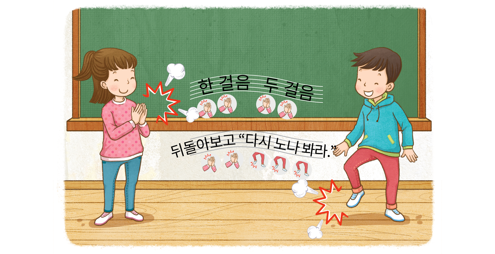
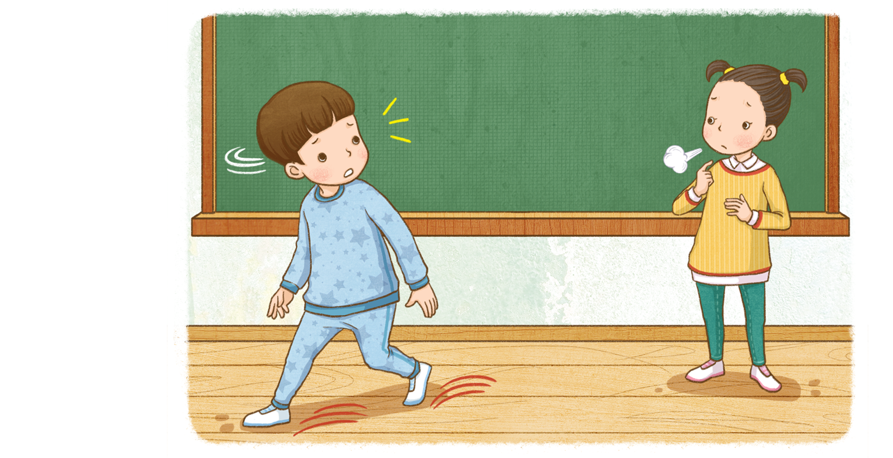

시를 읽는 여러 가지 방법에는 무엇이 있는지 생각해 보세요.
시를 읽는 여러 가지 방법
주고받으며 읽기
손뼉을 치거나 발을 구르며 읽기
떠오르는 장면을 행동으로 표현하며 읽기
친구와 주고받으며 시를 읽어 보세요.
한 걸음
두 걸음 가다가
두 걸음 가다가
뒤돌아보고
“다시 노나 봐라.”
인물을 클릭하세요.
손뼉을 치거나 발을 구르며 시를 읽어 보세요.

떠오르는 장면을 행동으로 표현하며 시를 읽어 보세요.
한 발짝
두 발짝 가다가
또 돌아보고
“왜 안 부르지?”
두 발짝 가다가
또 돌아보고
“왜 안 부르지?”
